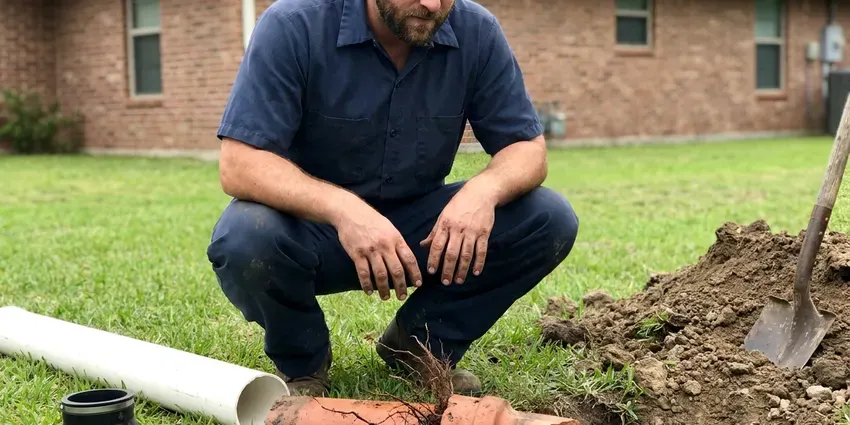

Trenchless Sewer Line Repair in Jackson, MI
Keep your pavers and the old shade tree. Our crew in Jackson, MI fixes cracked, root-filled sewer lines from small access points.
- Most Jobs Done in a Single Day
- Cured-In-Place Pipe Lining
- Two Small Access Pits Only
- Locator Marks the Exact Break

Get a Sewer Camera Look in Jackson, MI
We show you the video and price the repair before any work begins.
Sewer Line Repair in Jackson, MI That Spares the Yard
Our crew at CHV Plumbing carries a self-leveling push camera and a sonde locator that marks the break from the surface, plus a jetter and the inversion drum used for lining. That kit covers most residential laterals in Jackson, MI, from 3-inch cast iron to 6-inch clay. Most homes are 4-inch. Everything arrives on one truck, so there is no waiting on a second crew.
Some of what we do:
- Pinpointing breaks, roots and offsets with a push camera and sonde locator.
- Static and Pneumatic Pipe Bursting
- Recorded Video Pipe Inspections

Additional Plumbing Repair Services in Jackson, MI
We offer expert plumbing repair services across Jackson, MI to fix leaks, restore flow, and keep your system running smoothly.


Customers
Why Choose CHV Plumbing for Trenchless Sewer Line Repair in Jackson, MI?
Cutting a driveway costs you twice, first to saw and break the slab and then again to form and pour new concrete over the patch. Lining from the cleanout avoids both of those bills. For a line under concrete or pavers, trenchless is often the cheaper job once restoration is counted.
- Less Restoration, Small access points mean less concrete cutting and less yard repair.
- Long Service Life, Liners and HDPE pipe carry a 50-year design life when installed right.
- Jointless Pipe, A cured liner has no joints, so roots and groundwater have nowhere to get in.
Citywide Coverage
Clay and cast iron laterals show up all over Jackson, and we line both. Camera inspections can be booked for any address in town, usually within a day or two. A burst needs a bit more lead time, mostly for the utility locate and the permit, which together can take three to five business days depending on the office.
Experienced Team
The same crew that lines pipe also digs, so they know when a dig is the better call. That honesty saves money. They have worked lines under slabs and driveways, plus a few that ran beneath swimming pools and additions built long after the sewer went in.
Safety-First Approach
Every job follows the Michigan plumbing code and the local amendments the Jackson inspector enforces. We only install liners and pipe listed for sanitary sewer service. We pull the permit before the crew shows up, and the inspector can review the final camera video if the jurisdiction asks for it.
Trusted Certified Jackson Plumbing Services Professionals
At CHV Plumbing, we take pride in licensed, certified plumbing services throughout Jackson, MI. Those papers on the wall mean something. Our plumbers hold recognized industry credentials, and they follow strict safety and quality rules on every repair, installation and maintenance call we run.
Call Us Now PHCC Plumbing Contractor Recognition
PHCC Plumbing Contractor Recognition Better Business Bureau (BBB) Accreditation
Better Business Bureau (BBB) Accreditation Angi Certified Pro
Angi Certified Pro ISO 9001 Quality Management Certification
ISO 9001 Quality Management CertificationSewer Lining and Pipe Bursting in Jackson, MI
Commercial Trenchless Sewer Line Repair in Jackson, MI
Restaurants feel a sewer failure fast, because grease and a dish machine put heavy load on a 4- or 6-inch building drain all day. We can line at night. A trench through a parking lot means lost spaces and a blocked entrance for a week or more. A liner installed from a cleanout skips all of it.

Emergency Trenchless Sewer Repairs in Jackson
Sewage coming up through a floor drain is an emergency, but the first fix is usually a cable or a jetter to get the line flowing again. Lining comes after that. CHV Plumbing can often schedule the liner within a few days. In the meantime the house drains normally.
Pipe Bursting Sewer Repair in Jackson
Bursting can upsize the line. We can pull in 6-inch HDPE behind a head that bursts an old 4-inch clay pipe, which helps on lines that clog because they were undersized from the start or have been added onto with extra bathrooms. Each end only needs a pit around three by four feet. No trench in between.
Orangeburg and Clay Pipe Replacement in Jackson
Orangeburg is bituminous fiber pipe that was laid in houses mostly from the late 1940s into the early 1970s. It goes oval and blisters, so a liner has nothing round to bond to and bursting is usually the better fix. Clay is different. Vitrified clay that still holds shape lines well.
Sewer Camera Inspection for Trenchless Repair in Jackson
Every trenchless job starts with a push camera fed in from the cleanout or a pulled toilet. The screen shows the inside of the pipe live, and a sonde in the camera head lets us mark the exact spot on the ground above it. The locator also reads depth, which matters for pit planning. No guessing where to dig.
Causes of Sewer Line Failure in Jackson, MI
Shifting soil is one of the main reasons sewer joints pull apart or crack. Basements are the norm, so sump pumps, drain tile and perimeter drains are a big part of residential plumbing. Roots are the other big one, since a hairline gap at a clay joint is enough for a feeder root to get in and then swell into a mat that catches paper. Then age finishes the job. Cast iron scales and thins, and clay bells crack under the weight of soil and traffic.
Perma-Liner Trenchless Solutions in Jackson
Perma-Liner makes inversion drums and epoxy systems for lining 2- to 6-inch drain lines, which covers most of what we see in houses. The setup is compact enough to fit in a pickup bed and roll through a side gate. Compact gear matters on tight lots. Resin gets mixed on site and timed to the length of the run, so it does not start curing before the liner is in place.

Cured-In-Place Pipe Prep and Lining in Jackson
Prep is most of the job. We jet the line at high pressure to strip roots, grease and loose scale, then camera it again to measure the exact footage before cutting the liner tube to length. A poor prep job means a wrinkled liner. Lining works best on cracked or root-intruded lines that still hold their round shape.
Trenchless Sewer Line Repair Near Me in Jackson, MI
Searching for trenchless sewer line repair near me in Jackson, MI usually starts after the second or third backup in a month. CHV Plumbing has camera trucks working Jackson most days. We can often get there the same day, and the camera run takes about an hour. You see the footage before the truck pulls away.
Most people who find us this way want one thing, which is the sewer fixed without tearing up the yard they spent years getting to grow. CHV Plumbing does lining, point repairs and bursting with one crew. The pipe decides the method, not the other way around.
CHV Plumbing at a Glance
- Fully licensed plumbing team covering Jackson, MI
- Same-day appointments and 24/7 emergency response
- Upfront, flat-rate pricing before work begins
- 4.9-star rated by 670+ Michigan customers
Jackson Map
Jackson Information
- Population
- 30,854
- Area codes
- 517/269/734
- Service area
- Jackson and communities within 40 miles
- Nearby
- Lansing, Ann Arbor, East Lansing, South Lyon
Basements are the norm, so sump pumps, drain tile and perimeter drains are a big part of residential plumbing. Shifting ground pulls clay and cast iron joints apart over time, and a jointless liner or fused HDPE pipe in Jackson, MI holds up to that movement far better.
Talk to a Plumber
Reach out to CHV Plumbing for reliable plumbing work done by licensed pros in Jackson, MI.
Our Specialized Plumbing Services in Jackson, MI
At CHV Plumbing, you get every kind of plumbing service from one company across Jackson, MI. We go from leak detection all the way to full system installations, for homes and commercial buildings, and we do it quickly at a fair price. Explore our core services below:


What a Trenchless Sewer Repair Involves in Jackson, MI
Here is how we take a sewer line from broken to working without a long trench.
Request a Quote
Call CHV Plumbing at (810) 380-5918 and tell us what the drains are doing. We set up a camera inspection at your Jackson property, usually within a day or two.
Sewer Line Inspection
We run a push camera from the cleanout to the main, record the footage and mark the problem spots on the ground with a locator.
Prepare Access Points
Depending on the method, we dig one or two small pits or work straight from the cleanout. Pits are about three feet square.
Frequently Asked Questions About Trenchless Sewer Line Repair in Jackson
Expect roughly $80 to $250 per foot for trenchless sewer repair in Jackson, MI, depending on the method and the pipe diameter. A 50-foot house lateral often lands between $4,000 and $12,500. That price covers labor and materials. Permits are listed separately.
Usually, yes. Many cities require one for sewer lining or replacement, and a second one if work extends into the street. We handle permits when needed.
Plan on a day for most lining jobs and one to two days for a burst. A dig can take a week. You only lose use of the drains while the resin cures, which is usually a few hours, so most families never leave the house and can use the toilets again by dinner.
A rented drum machine might clear the clog for a week or two, but it will not fix a crack, an offset or the roots that keep growing back through a broken joint. It can also make things worse. Get a camera inspection first.
Roots cannot get into the lined section. A properly installed liner has no joints, so they have nowhere to get in.
Perma-Liner and MaxLiner are two of the systems we install. Both have long track records in residential and commercial lining. We pick the system by pipe size and material, since some liners handle 45- and 90-degree turns better than others do.
Terms depend on the method and the product. Workmanship is covered in writing by us. The liner manufacturer covers the materials on its own, and the exact years, often 10 or more on workmanship and longer on materials, are spelled out on your estimate before you sign.
Probably, if the pipe still holds its round shape. Lines with cracks or roots are usually good candidates for a liner, and so does cast iron with surface corrosion, as long as there is enough sound wall left to descale and bond to. A collapsed or badly offset line will need bursting or a spot dig.
What People Are Saying About Our Plumbing Experts?

Tyler J.
We bought a taller comfort height toilet for my dad, who just had knee surgery. The plumber pulled the old one, found the flange was cracked, and replaced it before setting the new bowl. Took about two hours.
Toilet Installation · Novi, MI
Jessica T.
We were adding a gas range in a kitchen remodel and needed a new line run from the meter. The plumber pulled the permit, ran the pipe through the crawl space, and had it inspected and approved within the week.
Gas Line Repair · Battle Creek, MI
Brian W.
I smelled gas behind the dryer and called right away. The plumber found a corroded flex connector, replaced it, and pressure tested the whole line before turning the gas back on. He let me watch the gauge hold steady for fifteen minutes.
Gas Line Repair · Jackson, MI
Robert G.
The camera showed a full break in our clay sewer line near the street. CHV Plumbing replaced it with a trenchless pipe burst, so the only digging was two small pits in the yard. They let us watch the footage before and after.
Sewer Line Replacement · Novi, MIJames P.
Our restaurant had a slow leak at the hand sink that was rotting the cabinet base. CHV Plumbing came in at six in the morning before prep, replaced the trap and both supply lines, and was packed up before my first cook clocked in.
Commercial Plumbing · East Lansing, MIPaul B.
Our pit pump ran nonstop even in dry weather. The plumber found the check valve was stuck open, so the same water kept cycling back into the pit. New valve, new float switch, done in an hour. It runs quiet now.
Sump Pump · Lansing, MI